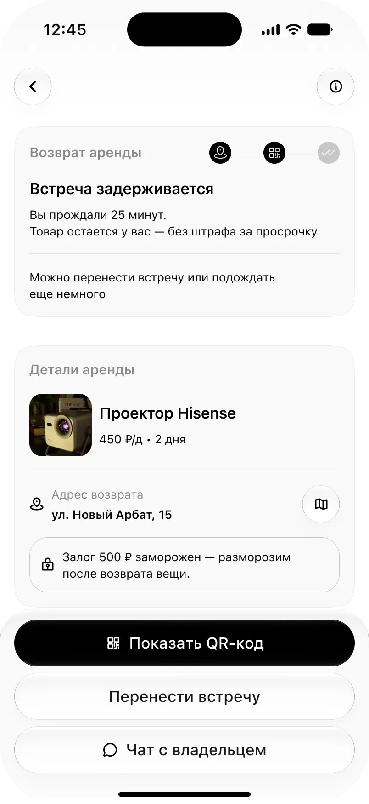
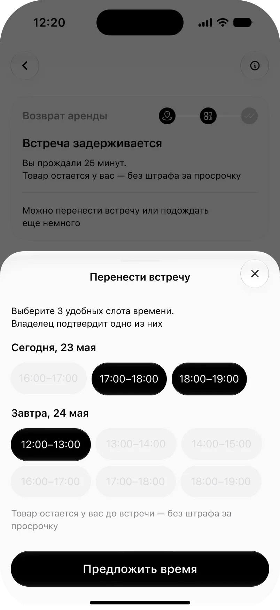
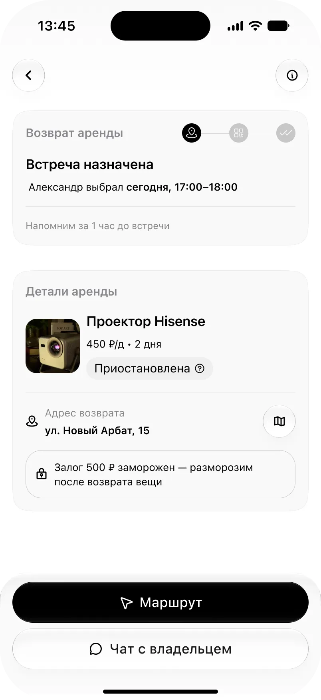
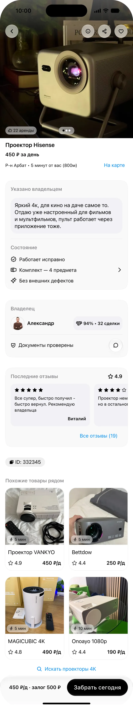

Задача
В аренде вещей у незнакомых людей условия сделки выясняются на встрече, когда обе стороны уже потратили время. До встречи проверить нечего.
Что получилось
Сервис аренды вещей поблизости, где состав, состояние и время встречи зафиксированы до неё, а спор решается сверкой двух состояний, а не словом против слова.
Если коротко
Проблема
Знакомая арендовала PS5 на вечер. Созвонилась с владельцем за день, договорилась на конкретное время. Вместо залога отправила фото паспорта — так попросил владелец. Предупредила, что вещь заберёт другой человек, он согласился.
За пять часов до встречи владелец написал, что забирать нужно раньше. Она не могла, поехали друзья. На месте им отказали: паспорт оформлен на другого человека.
Это выглядело как частный случай, поэтому я пошёл смотреть, что пишут другие. Отзывы на объявления аренды на Авито — единственные публично доступные данные о реальных сделках в этой нише. Меня интересовали не оценки, а описания того, что пошло не так.
Я разложил случаи по шагам сделки. Все три пришлись на её правую половину — туда, где обе стороны уже потратили время и отступать поздно.
Цифры на шкале — случаи, разобранные ниже.
Приставка PS5
Владелец перестал отвечать после договорённости.
«Я стоял дома и смотрел в потолок, так как договорились, что человек, который привезет пс, напишет когда освободится».
Оценка 1 из 5 · сделка сорвалась · Авито
Приставка PS4
Комплект не соответствовал заявленному, предложили другой товар.
«Промурыжили, пол часа прождали, в итоге у приставки один джойстик или берите пс4».
Оценка 1 из 5 · сделка сорвалась · Авито
Колонка JBL
Оборудование оказалось неисправно для того сценария, ради которого его брали.
«По приезду выяснилось, что штекер ресивера в неудовлетворительном состоянии и караоке не может работать».
Оценка 1 из 5 · сделка состоялась · Авито
Во всех трёх случаях узнать заранее было нельзя. До встречи не существовало способа проверить состав комплекта, состояние вещи и намерения второй стороны.
Третий случай стоит отдельно: владелец знал о неисправности заранее и не сказал. Человек знал и скрыл — и именно это позже превратилось в конкретное требование к карточке товара.
Спроектировать сервис аренды вещей поблизости, где условия сделки известны до встречи, а не выясняются на ней.
Исследование
Сначала я планировал собрать общие инсайты из всех интервью. Но трёх интервью слишком мало, чтобы говорить о поведении пользователей в целом. Люди называли похожие боли, а причины у каждого оказались свои.
Поэтому я разбирал каждое интервью как отдельную историю, а повторяющиеся наблюдения фиксировал как гипотезы, которые продукт должен проверить после запуска.
Смотрел не только на то, что человек говорит буквально, но и на потребность за словами. Фраза «залог небольшой» для меня была не про деньги. Если владелец спокойно берёт небольшой залог, значит, он уверен в том, что делает — а для арендатора это плюс к доверию.
Интервью · Алексей, 29 · арендатор
Что было
Нужен был моющий пылесос на один день, покупать его не имело смысла. Нашёл объявление, договорился с владельцем, при встрече получил короткий инструктаж. За дорогую вещь попросили небольшой залог — именно это, по словам Алексея, вызвало доверие.
«По факту он оставляет у меня дорогостоящую вещь, при этом особо много денег в залог не берет».
Что я из этого взял
Зацепило не то, что сделка прошла успешно, а почему. Человек доверился не размеру залога, а понятному процессу: инструктаж, прозрачные условия и владелец, который уже знает, как сдавать вещи.
Гипотеза Когда процесс аренды структурирован, доверие растёт даже без дополнительных гарантий.
Интервью · Ульяна, 24 · арендатор
Что было
Искала оборудование для мероприятия, выбирала по цене и отзывам. Уже перед встречей выяснилось, что часть важных условий не совпадает с её ожиданиями. Сделка сорвалась.
«Если бы описание соответствовало требованиям, сделки были бы более успешными».
Что я из этого взял
Проблема возникла не из-за самой аренды. Вещь была, обе стороны были готовы встретиться — но критичные детали выяснились слишком поздно.
Гипотеза Если фиксировать условия сделки заранее, сорванных встреч станет меньше.
Интервью · Алексей, 28 · владелец
Что было
Уже сдаёт вещи, но только знакомым. Не потому что боится незнакомых людей, а потому что не видит удобного способа делать это регулярно.
«Было бы здорово автоматизировать это, как в Airbnb».
Что я из этого взял
Барьер оказался не в отсутствии спроса, а в отсутствии инструмента, который берёт на себя организацию процесса.
Гипотеза Если продукт возьмёт организацию на себя, владелец будет готов сдавать вещи более широкой аудитории.
Перечитал свои вопросы после интервью. В обоих я подсказывал ответ — не специально, увлёкшись процессом.
Как спросил «Тебе просто звонили сами или размещал объявление?»
Дал два варианта на выбор, а реальный ответ оказался третьим: человек находил арендаторов через знакомых. Повезло, что он всё равно рассказал сам.
Как надо было «Как находишь арендаторов?»
Как спросил «Что было самым неудобным? Что реклама запрещена? Или может что-то другое?»
Ответил за респондента, не дождавшись его версии. Согласиться с готовым вариантом всегда проще, чем придумать своё.
Как надо было «Что было самым неудобным?»
Обе ошибки про одно и то же: хотелось помочь человеку ответить. На самом деле я помогал себе услышать то, что уже ожидал услышать.
Один пример, чтобы было видно процесс, а не только результат.
| Что сказали | Что я увидел |
|---|---|
| «По факту он оставляет у меня дорогостоящую вещь, при этом особо много денег в залог не берёт» | Низкий залог — защиты нет |
| «Формальная ответственность всё равно на мне — фото, залог» | Владелец несёт риск за пределами сделки |
| «Если бы описание соответствовало требованиям, сделки были бы более успешными» | Обещание ничем не подкреплено |
У каждого своя ситуация и своя причина, но все трое говорят об одном ощущении: защиты нет, и каждый выкручивается сам.
Три вывода
Каждый вывод я довожу до конкретного решения. Если наблюдение ни во что не превращается, оно остаётся наблюдением — в продукте ему делать нечего.
Арендатор хочет взять вещь быстро, почти так же просто, как вызвать такси. Владельцу важно понимать, кому он её отдаёт и что она вернётся целой. На первый взгляд эти потребности конфликтуют.
Конфликта нет. Проверки нужны — они просто не должны ощущаться отдельным этапом.
В продукте Верификация, холд залога и фотофиксация встроены в сам сценарий, а не идут дополнительными действиями поверх него.
Единственная сделка, где не возникло ни одной проблемы, — у Алексея, 29. Не потому что участникам повезло: владелец заранее выстроил понятный процесс — инструктаж, прозрачные условия, небольшой залог.
Дело не в людях, а в структуре самой сделки. Когда процесс организован, обе стороны почти не тратят время на уточнения.
В продукте Эту роль берёт на себя сервис. Рассчитывать, что каждый владелец сам выстроит хороший сценарий, нельзя.
На этом выводе держится весь флоу передачи и возврата
Арендатор волнуется до и во время получения: соответствует ли вещь описанию, всё ли работает, не окажется ли он виноватым в уже существующих дефектах. Владелец начинает переживать позже — когда вещь находится у другого человека и подходит время её возвращать.
Одной универсальной «фичи доверия» не существует: страх у сторон возникает в разное время.
В продукте Две отдельные проверки состояния. При получении её делает арендатор, при возврате — владелец. Каждая закрывает проблему в тот момент, когда она действительно возникает.
Три интервью — слишком мало, чтобы делать выводы о рынке. Они помогли увидеть возможные сценарии и сформулировать гипотезы, но не подтвердить их.
Поэтому всё, что выше, я рассматриваю как гипотезы, которые нужно проверять после запуска — продуктовыми метриками и поведением реальных пользователей.
Конкурентный анализ
Пять сервисов решают одну задачу — доверие между незнакомыми людьми. И все обходят одно и то же место.
| Сервис | Чем защищает сделку | Что с передачей |
|---|---|---|
| Авито | Страхование доставки. | Очная сделка — вне зоны ответственности сервиса. Договариваются в переписке, дальше сами. |
| Rentmania | Курьерская доставка и залог в полную стоимость вещи. | Живой встречи нет — вместо неё курьер. Владельца защищает, арендатора отпугивает. |
| Airbnb | Депозит отменён, вместо него страховка до $3 млн. | Личная передача — штатный сценарий, но интерфейса у неё нет. |
| Next2U | Двусторонний акт, сервис заявлен арбитром в спорах. | Акт фиксирует, что передача состоялась. Но не что передано, в каком состоянии и полный ли комплект. |
| Делимобиль | Геолокация и фотофиксация состояния — рекомендованные, не обязательные. | Передачи между людьми нет, это каршеринг. Но механика фиксации ближе всего к тому, что нужно. |
Авито страхует только доставку. Rentmania возила курьером и держала залог в полную стоимость вещи. Airbnb отменил депозит и заменил его страховкой на 3 млн долларов — для p2p-сервиса такой фонд на запуске невозможен.
У Airbnb и Next2U личная передача — штатный сценарий, но интерфейса в ней нет. Получается, что два человека стоят напротив друг друга и нажимают кнопки, подтверждая факт, который и так известен обоим.
Оба p2p-сервиса дошли до двустороннего акта. Он фиксирует, что передача состоялась, — но не что передано, в каком состоянии и полный ли комплект. Next2U при этом заявлен арбитром в спорах, хотя данных для решения не собирает.
Комплект, состояние, факт встречи — ровно то, из-за чего конфликтовали люди в отзывах из первого блока. Именно это место никто не проектирует.
У Делимобиля Геолокация и фотофиксация состояния
Поправка Обязательные, а не рекомендованные. У Делимобиля пользователи регулярно платят за чужие повреждения, потому что не сняли машину до поездки.
У Airbnb Механика доверия без бесконечных проверок
Поправка С залогом. Страхового фонда на 3 млн у p2p-сервиса на старте нет, и заменить его нечем.
У p2p-сервисов Идея двустороннего акта
Поправка С комплектом, состоянием и фото внутри. Иначе акт подтверждает встречу, но не помогает в споре.
Ниша не новая. Основатель Rentmania писал на Хабре в 2013 году, что опросил около двухсот знакомых: люди охотно брали бы вещи в аренду, но не знают, куда идти, а поиск выводит на разрозненные сайты, не внушающие доверия. За тринадцать лет описание почти не устарело — изменилось только то, что теперь есть Авито.
Решения
Из исследования и разбора аналогов остались три конкретные задачи. Все три решаются в одном сценарии — от поиска вещи до отправленной заявки.
Понять, удобно ли забирать вещь, нужно мгновенно — и не в километрах, а во времени.
Верификация и отзывы снимают первичное недоверие, но не отвечают, кто виноват, если вещь вернули повреждённой.
Свободный чат создаёт трение и растягивает время до сделки. Нужен флоу, а не переписка.
Шесть шагов от ленты до отправленной заявки. Каждый закрывает часть одного из трёх вызовов.
Фильтр «Забрать пешком» — 5, 15 или 30+ минут, у каждой карточки бейдж со временем в пути. Решение о поездке принимают по времени, а не по расстоянию, поэтому километры считать не приходится. Точка отсчёта выбирается на онбординге и постоянно видна в шапке.
Фильтр «Забрать пешком» — 5, 15 или 30+ минут, бейдж со временем на карточке. Решение принимают по времени, а не по километрам.
Состояние вещи заявлено до встречи: исправность, комплект из четырёх предметов, внешние дефекты. Рядом индекс доверия владельца — доля сделок без срывов. Это ответ на случай с колонкой, где владелец знал о неисправности и промолчал.
Состояние заявлено до встречи: исправность, комплект, дефекты. Ответ на случай, где владелец знал о неисправности и промолчал.
На сколько дней нужна вещь. Стоимость пересчитывается сразу, до перехода к оплате.
На сколько дней нужна вещь. Стоимость пересчитывается сразу, до оплаты.
Не точное время, а час. Аренда считается с начала окна, поэтому опоздание перестаёт быть предметом спора — на экране это сказано прямо: приходить к минуте не нужно. При передаче окно защищает владельца, при возврате — арендатора.
Не точное время, а час: аренда идёт с начала окна, и опоздание перестаёт быть предметом спора.
Залог замораживается, а не списывается. Сумма и момент разморозки названы до подтверждения — владельцу нужна гарантия, арендатору важно знать, что деньги вернутся.
Залог замораживается, а не списывается. Сумма и момент разморозки названы до подтверждения.
Владелец получает запрос и подтверждает его одним тапом. Переписки в сценарии нет — дальше начинается передача.
Владелец подтверждает запрос одним тапом. Переписки в сценарии нет — дальше передача.
Передача
До встречи обе стороны имеют дело с обещаниями: описанием, отзывами, рейтингом. На встрече вещь переходит из рук в руки, и дальше спорить будет уже не о чем — либо состояние зафиксировано, либо нет. Здесь два флоу впервые становятся одной сделкой.
Девять шагов от заявки до начала аренды. Сквозь них тянется один дефект: в карточке заявлен комплект из четырёх предметов, на приёмке HDMI-кабеля не окажется.
Ожидание названо числом дважды: обычно владелец отвечает за семь минут, через восемнадцать заявка отменится сама и деньги не спишут. Верхняя граница ожидания видна сразу, поэтому проверять статус незачем.
Ожидание названо числом: обычно ответ за 7 минут, через 18 заявка отменится сама и деньги не спишут.
Адрес, окно встречи и комментарий владельца — «выйду к подъезду, буду в синей рубашке». QR-код виден, но заблокирован до начала встречи: экран показывает, что будет дальше, не давая сделать это раньше времени.
Адрес, окно встречи и комментарий владельца. QR виден, но заблокирован до встречи: экран показывает, что будет дальше.
Стоять у подъезда и не понимать, идёт ли к тебе человек, — самая частая точка срыва встречи. Поэтому здесь обратный отсчёт и подпись «обычно выходит за 3–5 минут»: ожидание снова названо числом, а не словом «скоро».
Обратный отсчёт и «обычно выходит за 3–5 минут». Стоять и не знать, идёт ли человек, — частая точка срыва.
Встреча подтверждается сканированием QR. Рядом лежит резервный код на случай, если сканер не сработает: встреча идёт на улице, у чужого подъезда, с плохой связью — сценарий должен доходить до конца и там.
Сканирование QR, рядом резервный код: встреча идёт на улице, с плохой связью — сценарий должен дойти до конца и там.
Факт встречи зафиксирован обеими сторонами. С этого момента начинается приёмка — то, чего нет ни у одного разобранного сервиса.
Факт встречи зафиксирован обеими сторонами. Дальше приёмка — то, чего нет ни у одного разобранного сервиса.
Фотофиксация отвечает за состояние вещи. Снимки делает тот, кто вещь принимает: при выдаче боится арендатор, поэтому фиксирует он.
Фото отвечает за состояние. Снимает тот, кто принимает вещь: при выдаче боится арендатор.
Чеклист отвечает за состав. Комплект из объявления лежит прямо на экране, сверять нужно с ним, а не по памяти: «Комплект полный?» → «Есть замечания» → «Не хватает HDMI кабеля, в объявлении указан». Это случай из интервью, только пойманный на встрече, а не через два дня.
Чеклист отвечает за состав: комплект из объявления на экране. «Не хватает HDMI кабеля» — случай из интервью, пойманный на встрече.
«2 пункта в порядке · 1 замечание». У замечания стоит пометка «Без фото» — и это не недосмотр: отсутствие предмета сфотографировать нельзя. Фото и чеклист отвечают за разное, поэтому требование фотофиксации здесь не нарушено.
У замечания пометка «Без фото»: отсутствие предмета не сфотографируешь. Фото и чеклист отвечают за разное.
Замечание доехало до последнего экрана и осталось в сделке. Списано 949 ₽, залог 500 ₽ заморожен до возврата — деньги названы отдельно от аренды, чтобы «списали 1449» не выглядело ошибкой.
Замечание доехало до последнего экрана и осталось в сделке. Списано 949 ₽, залог 500 ₽ заморожен до возврата.
Восемнадцать минут на ответ, «обычно за семь минут», «обычно выходит за 3–5 минут», обратный отсчёт на экране ожидания. В интервью срывалось не время, а терпение: человек не знал, сколько ещё стоять и чем это кончится. Число не ускоряет владельца, но снимает вопрос «меня кинули или он в лифте».
Фото фиксирует состояние, чеклист — состав. Это не дублирование и не противоречие: недостающий предмет нельзя сфотографировать, поэтому замечание о комплекте помечено «без фото» и остаётся полноценным замечанием.
Комплект заявлен в карточке, недостача поймана в чеклисте, замечание попало в сводку и осталось на экране начала аренды. Претензия живёт не в переписке, а в сделке — с датой и стороной, которая её зафиксировала.
Шаг с отметкой о прибытии здесь не показан: единственный отснятый экран для него — вариант без геопозиции, с подтверждением вручную. Он относится к границам системы, а не к основному пути, и разобран в закрывающем блоке.
Возврат
Третий вывод исследования — стороны боятся в разные моменты. При выдаче рискует арендатор: вещь чужая, а отвечать за неё ему. При возврате рискует владелец: вещь возвращается, и повреждение обнаружит он. Вывод остался бы словами, если бы не превратился в структуру: фиксирует тот, кто боится.
Поэтому возврат показан двумя флоу сразу: слева арендатор, справа владелец, шаг общий. Там, где у стороны экран не меняется, она в этот момент ничего не делает — и это видно без объяснений.
Одна сделка, два экрана. На экране арендатора стоят частые вопросы — что делать, если сломал вещь, и как продлить аренду. Они лежат в моменте реальной тревоги, а не в разделе помощи, куда за ними пошёл бы не каждый.
Частые вопросы — что делать, если сломал вещь, и как продлить — лежат в моменте тревоги, а не в разделе помощи.
Напоминание приходит арендатору: возвращать ему. У владельца на этом шаге не меняется ничего.
Напоминание приходит арендатору: возвращать ему. У владельца не меняется ничего.
Окно выбирает арендатор. При выдаче оно защищало владельца — аренда шла с начала окна, и опоздание переставало быть предметом спора. При возврате оно защищает арендатора: пока окно не закончилось, он не должен ни оправдываться, ни доплачивать.
При выдаче окно защищало владельца, при возврате — арендатора: пока оно идёт, он не оправдывается и не доплачивает.
Обе стороны на своих экранах видят одно и то же ожидание. Дальше начинается то, ради чего блок собран.
Обе стороны видят одно и то же ожидание. Дальше роли расходятся.
Встреча подтверждается тем же способом, что при выдаче — экран, сканирование, резервный код. Механика повторяется намеренно: второй раз человек уже знает, что делать. С этого шага роли расходятся, приёмку ведёт владелец.
Подтверждение то же, что при выдаче: второй раз человек уже знает, что делать. С этого шага приёмку ведёт владелец.
Снимает владелец. У арендатора на экране — «Александр проверяет вещь. Делает фото…», и дальше три шага подряд его экран не меняется. Это не пустое место в сценарии, а ответ на вопрос, кто здесь работает: тот, кто рискует.
Снимает владелец. У арендатора экран не меняется три шага подряд — работает тот, кто рискует.
Первые два вопроса те же, третий сменился: вместо «Внешне без повреждений?» — «Состояние как при выдаче?». Рядом лежат фото с выдачи и замечание про HDMI-кабель. Проверка привязана к зафиксированному состоянию, а не к тому, каким владелец вещь помнит.
Вместо «Внешне без повреждений?» — «Состояние как при выдаче?». Рядом фото с выдачи: проверка привязана к нему.
Владелец отметил царапину на крышке, но фото к ней не приложил — поле осталось пустым. Система это запомнит и через шаг предъявит ему же.
Владелец отметил царапину, но фото не приложил. Система это запомнит и через шаг предъявит ему же.
«Принять с замечаниями?» — замечания останутся в истории, залог разморозим. «Открыть спор» стоит вторичной кнопкой. Спокойный путь предложен по умолчанию, но второй не спрятан.
«Принять с замечаниями» — залог разморозим, замечания останутся. «Открыть спор» вторичной кнопкой: спокойный путь по умолчанию.
На финальном экране одновременно «Появилась царапина на крышке» и «Залог 500 ₽ разморожен». Система собрала доказательства, но решение за неё не приняла — это прямая противоположность Next2U, который заявлен арбитром в спорах, хотя данных для решения не собирает.
Одновременно «Появилась царапина» и «Залог 500 ₽ разморожен». Система собрала доказательства, но решение за неё не приняла.
Вещь возвращается владельцу в любом случае — она его. Спор не об этом, а о том, кто отвечает за царапину, которой при выдаче не было. К этому моменту у сервиса уже есть всё, что стороны зафиксировали сами.
Открывается спор из того же диалога, что показан шагом выше: отдельного входа «пожаловаться» нет, это продолжение приёмки, а не жалоба в пустоту.
Две даты рядом: «При выдаче · 21.05» и «При возврате · 23.05», с фото и замечаниями обеих сторон. Спорить о том, была ли царапина, больше не о чем — вопрос только в том, когда она появилась.
«При выдаче · 21.05» и «При возврате · 23.05» рядом, с фото обеих сторон. Вопрос уже не в том, была ли царапина, а когда появилась.
Спор уходит в поддержку с собранными материалами. Решение принимает человек — сервис доводит до него факты, а не вердикт.
Спор уходит в поддержку с материалами. Решение принимает человек — сервис доводит факты, а не вердикт.
При выдаче фото и чеклист заполняет арендатор, при возврате — владелец. Одна и та же механика, разные руки. Это не удобство, а следствие вывода из исследования: сторона, которая в этот момент рискует, получает инструмент, а не просьбу довериться.
Владелец отметил царапину, но фото к ней не приложил. На экране спора под его замечанием стоит плашка «Без фото доказательств» — при том, что общие фото возврата на месте. Сервис не встаёт на сторону арендатора и не отклоняет претензию: он показывает, чего в ней не хватает, тому, кто её заявил.
На финальном экране «Появилась царапина на крышке» и «Залог 500 ₽ разморожен» стоят рядом. Собрать доказательства и вынести решение — разные задачи, и вторую сервис себе не присваивает.
Обратный отсчёт до конца окна стоит там намеренно. Внутри часа арендатору не нужно ни объясняться, ни доплачивать, но час не бесконечен, и владелец знает верхнюю границу ожидания. Одна подпись работает на обе стороны: окно защищает и обязывает одновременно.
Границы
Три решения, продуманных до конца и не вошедших в продукт. Они держат объяснение, почему граница системы проходит там, где проходит.
Решение Умные локеры вместо живой передачи
Почему нет Локеры убирают неявку — и вместе с ней единственный момент, когда обе стороны видят вещь одновременно. Именно там сходятся два состояния. Плюс сети локеров на старте нет, а стремянка в ячейку не помещается.
Решение Тумблер «пропустить фото — беру ответственность»
Почему нет Ответственность за состояние вещи нельзя взять в одностороннем порядке: пропустив фото, арендатор лишает доказательства владельца, не спросив его. Фотофиксация осталась единственным местом в продукте без обходного пути.
Решение Сложная шкала индекса доверия
Почему нет Первая версия считала веса по типам срывов, затухание старых нарушений и поправку на объём. Систему, которую через месяц не объяснишь ни пользователю, ни поддержке, защищать нечем. Осталось одно правило — доля сделок без срывов, а сложность ушла в определение срыва: молчаливая неявка считается, предупреждённая отмена — нет.
Здесь честнее назвать вслух, чем оставить читателя думать, что я этого не заметил.
История, с которой начинается кейс, ломается именно на этом: знакомая предупредила, что вещь заберёт другой человек, а на месте отказали. В спроектированной системе сценарий тоже не закрыт — QR, чеклист и фото привязаны к тому, кто оформил аренду. Признать это важнее, чем дописать решение задним числом: проблема из первого блока видна, а ответа на неё нет.
Состояние «Приостановлена» закрывает базовый случай — время не идёт, штрафов нет. Многодневную паузу, продление на паузе и обоюдные пропуски я не проектировал: без данных о том, как часто это случается, вышли бы предположения, а не система. С просрочкой то же — состояние есть, а поведение после зависит от бизнес-правил и юридической модели, не от интерфейса.
Сюда же относится шаг с отметкой о прибытии в сценарии передачи: единственный отснятый для него экран — вариант без геопозиции, с подтверждением вручную. Обходной путь есть, основной не отрисован, и выдавать запасной за основной я не стал.
Самая частая тревога арендатора при возврате: вещь чужая, а человек не появился. Ветку показываю компактно — она важна, но не должна перевесить основную линию.

Цена ожидания снята сразу
«Вы прождали 25 минут. Товар остаётся у вас — без штрафа за просрочку». Это стоит выше любых кнопок: сначала снимается тревога, потом предлагается действие.

Ход делает тот, кто ждал
Арендатор предлагает три слота, владелец подтверждает один. Не переписка о том, кто когда сможет, а выбор из готового.

Тупика нет по умолчанию
Аренда уходит в статус «Приостановлена»: оплата не начисляется. Если владелец не ответит до срока, система назначит ближайший слот сама — молчание одной стороны не блокирует другую.
Всё выше — гипотезы. Продукт не выходил в прод, замеров нет, поэтому вместо результатов честнее показать, какие цифры я считал бы подтверждением, а какие — опровержением.
| Гипотеза | Подтвердится, если | Не подтвердится, если | |
|---|---|---|---|
| Фотофиксация | Обязательные фото при получении и возврате снижают долю спорных сделок. | Доля сделок со спором меньше 3%. | Больше 10% приёмок брошено на полпути — трение дороже пользы. |
| Залог | Гарантированный залог снимает страх владельца выставить вещь. | Больше 30% зарегистрированных владельцев публикуют объявление за две недели, больше половины выставляют вторую вещь после первой сделки. | Первая цифра ниже 15% — барьер не в страхе, а в трудоёмкости самого объявления. |
| Время пешком | Время пешком вместо расстояния повышает переход от просмотра к запросу. | Прирост конверсии больше 15% к контрольной группе. | Разница в пределах погрешности — решают цена и наличие, а не подача. |
Третья гипотеза проверяема только там, где известна точка отсчёта. Пользователи без геопозиции и без адреса видят район, как у конкурентов, и в тест не попадают.
Зарабатывает сервис на состоявшейся передаче, а не на показах или подписке: сорванная встреча не приносит платформе ничего, и её интересы совпадают с интересами сторон по построению. Отдельно продаются расширенное покрытие поверх залога и подъём объявления среди равных по близости. Не продаётся безопасность: верификация, фотофиксация, залог и спор — не предмет торга, иначе продукт торговал бы тем, на чём держится.
Я начал с уверенности, что проблема в поиске и доверии, а закончил тем, что она в одном моменте, который никто не проектирует. Ни одно из трёх интервью не подтвердило исходную догадку.
Главный вывод не про аренду. Когда механика повторяется — фото, чеклист, подтверждение, — сделать её одинаковой для обеих сторон соблазнительно. Здесь правильным оказалось обратное: та же механика в разных руках, в зависимости от того, кто в этот момент рискует. Симметрия выглядела бы аккуратнее и перестала бы отвечать на вопрос, ради которого всё затевалось.
Кейс описывает концепт. В прод продукт не выходил, пользовательских замеров нет, и всё, что здесь утверждается, — свойства макета и прототипа либо гипотезы, помеченные как гипотезы.

Экран прокручивается